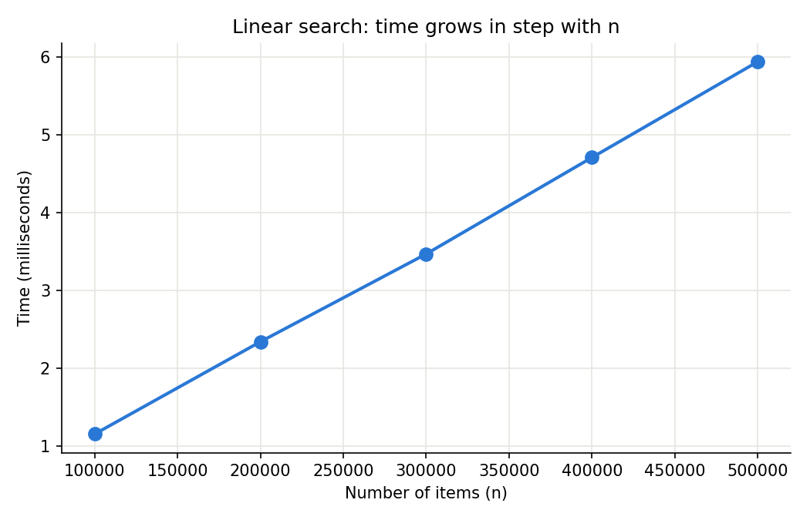

Chapter 16: Scripting Questions with Answers¶
Python Libraries for Data Structures and Algorithms
This page contains the answers to the 20 scripting questions on Chapter 16 of the book. Each question asks you to write a short Python script. The question is given first, followed by a full answer script, its output, and an explanation of how it works.
Chapter 16 deals with two linked topics. The first is algorithms: step-by-step methods for common jobs such as searching and sorting. The second is Python's Standard Library: the ready-made modules that come with every Python installation, such as collections, heapq, bisect, queue, enum, dataclasses, functools, itertools, json and pickle. The first five questions ask you to write searching and sorting algorithms yourself, so you can see how they work inside. The remaining questions show how the Standard Library gives you well-tested tools for the same kinds of jobs, so that in real programs you rarely need to build them from scratch.
Writing these scripts is the best way to make the ideas in the chapter stick. Reading about a queue or a heap is useful, but watching one work, step by step, on your own screen is what builds real understanding.
How to use this page
- Read the question and try to write the script yourself first.
- Then read "How it works" for the logic in plain words.
- Copy the answer script into a
.pyfile and run it. Compare your output with the output shown. - Try the follow-up questions to test your understanding.
All scripts were tested with Python 3.11. They also work in Python 3.8 and later. Scripts that measure time will show slightly different numbers on your computer. This is normal.
Topics covered
| Question | Topic | Module or technique |
|---|---|---|
| 1 | Linear search timing | random, time.perf_counter() |
| 2 | Binary search | Written by hand |
| 3 | Bubble sort | Written by hand |
| 4 | Insertion sort | Written by hand |
| 5 | Selection sort | Written by hand |
| 6 | Stack | list |
| 7 | Queue | collections.deque |
| 8 | Counting words | collections.Counter |
| 9 | Grouping | collections.defaultdict |
| 10 | Named records | collections.namedtuple |
| 11 | Layered settings | collections.ChainMap |
| 12 | Priority tasks | heapq |
| 13 | Sorted insert | bisect |
| 14 | FIFO queue | queue.Queue |
| 15 | Undo system | queue.LifoQueue |
| 16 | Emergency queue | queue.PriorityQueue |
| 17 | Fixed choices | enum.Enum |
| 18 | Structured data | dataclasses.dataclass |
| 19 | Caching results | functools.lru_cache |
| 20 | Customising, combining and storing | functools.partial, itertools.chain, json, pickle |
Table of Contents¶
- 1. Linear Search Timing
- 2. Binary Search
- 3. Bubble Sort Implementation
- 4. Insertion Sort
- 5. Selection Sort
- 6. Stack using List
- 7. Queue using deque
- 8. Counter
- 9. defaultdict
- 10. namedtuple
- 11. ChainMap: Combine User Settings with Default Settings
- 12. heapq: Process Tasks According to Priority
- 13. bisect: Insert Item into Sorted List
- 14. queue.Queue: First In First Out Processing
- 15. LifoQueue: Undo Operation
- 16. PriorityQueue: Hospital Emergency Queue
- 17. Enum: Represent Fixed Choices
- 18. dataclass: Store Structured Data
- 19. lru_cache: Avoid Repeated Calculations
- 20. partial, itertools and json/pickle
1. Linear Search Timing¶
Create a script to implement linear search on randomly generated lists of different sizes and show how time increases with n.
1.1 How It Works¶
Linear search checks the items of a list one at a time, from the start, until it finds the target or reaches the end. Here n means the number of items in the list.
In the worst case, the target is not in the list at all, so every one of the n items must be checked. This makes linear search O(n): the time grows in step with the size of the list. (See Big O notation.)
The plan for the script:
- Write a
linear_search()function. - Choose four list sizes.
- Choose a target that can never be in the list (
-1), to force the worst case. - For each size, build a list of random numbers.
- Start a timer, run the search, stop the timer.
- Print the size and the time taken.
- Compare the times to see how they grow with
n.
We use time.perf_counter() because it is a precise clock made for measuring short periods. random.randint(a, b) gives a random whole number between a and b, including both.
flowchart TD
A["1. Take the next list size n"] --> B["2. Build a list of n random numbers"]
B --> C["3. Start the timer"]
C --> D["4. Check each item against the target"]
D --> E{"5. Item equals target?"}
E -- "Yes" --> F["6. Return True"]
E -- "No" --> G{"7. More items left?"}
G -- "Yes" --> D
G -- "No" --> H["8. Return False"]
F --> I["9. Stop the timer and record the time"]
H --> I
I --> J{"10. More sizes left?"}
J -- "Yes" --> A
J -- "No" --> K["11. Print how time grew with n"]
1.2 Answer Script¶
import random
import time
# Step 1: Define linear search
# It checks every item one by one.
def linear_search(numbers, target):
# Step 2: Compare target with every element
for item in numbers:
if item == target:
return True
# Step 3: If loop finishes, item was not found
return False
# Step 4: Different input sizes
sizes = [1000, 10000, 100000, 500000]
times = []
# Step 5: Use a missing target
# This forces worst case:
# every item must be checked
target = -1
for n in sizes:
# Step 6: Create list of n random numbers
# (random.randint(1, 100000) never gives -1, so the target is never found)
numbers = []
for i in range(n):
numbers.append(random.randint(1, 100000))
# Step 7: Start timer
start = time.perf_counter()
found = linear_search(numbers, target)
# Step 8: Stop timer
end = time.perf_counter()
elapsed = end - start
times.append(elapsed)
# :>7, prints n right-aligned with thousands commas
# :.6f prints the time with 6 digits after the decimal point
print(f"Items: {n:>7,} Found: {found} Time: {elapsed:.6f} seconds")
# Step 9: Show how the time grew compared with the smallest list
print()
print("How many times larger than the first list:")
for n, elapsed in zip(sizes, times):
size_ratio = n / sizes[0]
time_ratio = elapsed / times[0]
print(f" {size_ratio:>5.0f}x the items took {time_ratio:>6.1f}x the time")
1.3 Output¶
Your numbers will be different, because timing depends on your computer and on what else it is doing. The pattern will be similar.
Items: 1,000 Found: False Time: 0.000013 seconds
Items: 10,000 Found: False Time: 0.000143 seconds
Items: 100,000 Found: False Time: 0.001277 seconds
Items: 500,000 Found: False Time: 0.006141 seconds
How many times larger than the first list:
1x the items took 1.0x the time
10x the items took 10.9x the time
100x the items took 97.6x the time
500x the items took 469.5x the time
1.4 Explanation¶
- Every search returned
Found: False, so every item was checked each time. This is the worst case. - When the list became 10 times bigger (1,000 to 10,000), the time became roughly 10 times bigger.
- When it became 500 times bigger, the time became roughly 500 times bigger.
- So the time grows in a straight line with
n. This is whatO(n)looks like in practice.
The ratios will never be exact. Very short timings are affected by background activity on the computer, by the processor's memory cache, and by Python's own overhead. That is why the smallest list often shows the most "noise". Larger lists give steadier results.
The optional script below draws a graph of the times. It needs the third-party matplotlib library (pip install matplotlib). It repeats each search 5 times and keeps the fastest time, which smooths out the noise.
import random
import time
import matplotlib.pyplot as plt
# Step 1: The same linear search as before
def linear_search(numbers, target):
for item in numbers:
if item == target:
return True
return False
# Step 2: More sizes, so the line is easier to see
sizes = [100000, 200000, 300000, 400000, 500000]
times = []
for n in sizes:
numbers = [random.randint(1, 100000) for _ in range(n)]
# Step 3: Repeat 5 times and keep the fastest run
best = None
for _ in range(5):
start = time.perf_counter()
linear_search(numbers, -1)
elapsed = time.perf_counter() - start
if best is None or elapsed < best:
best = elapsed
times.append(best * 1000) # convert seconds to milliseconds
print(f"Items: {n:>7,} Fastest time: {best * 1000:.2f} ms")
# Step 4: Draw and save the graph
plt.figure(figsize=(7, 4.5))
plt.plot(sizes, times, marker="o", color="#2a78d6", linewidth=2, markersize=8)
plt.title("Linear search: time grows in step with n")
plt.xlabel("Number of items (n)")
plt.ylabel("Time (milliseconds)")
plt.ticklabel_format(style="plain", axis="x")
plt.grid(True, color="#e6e5e0")
plt.gca().spines["top"].set_visible(False)
plt.gca().spines["right"].set_visible(False)
plt.tight_layout()
plt.savefig("065-ch16-linear-search-timing.png", dpi=150)
print("Graph saved as 065-ch16-linear-search-timing.png")
Output (your times will differ)
Items: 100,000 Fastest time: 1.16 ms
Items: 200,000 Fastest time: 2.34 ms
Items: 300,000 Fastest time: 3.47 ms
Items: 400,000 Fastest time: 4.71 ms
Items: 500,000 Fastest time: 5.94 ms
Graph saved as 065-ch16-linear-search-timing.png
The graph from one run of this script:

The points lie close to a straight line. Doubling the number of items roughly doubles the time.
1.5 Follow-up Questions¶
1.5.1 What would happen to the times if the target were the first item in every list?
The search would stop after one comparison every time, so the time would be tiny and would hardly change with n. This is the best case, O(1). That is why timing tests use a missing target: it shows the worst case.
1.5.2 How could Step 6 be written in one line?
With a list comprehension: numbers = [random.randint(1, 100000) for _ in range(n)]. The _ is a common name for a loop variable that is not used. See list comprehensions.
2. Binary Search¶
Create a script to perform binary search on a sorted list and count comparisons.
2.1 How It Works¶
Binary search works only on a sorted list. Instead of checking items one by one, it looks at the middle item and throws away the half where the target cannot be. It keeps halving until it finds the target or runs out of items.
- Set
leftto the first index andrightto the last index. These mark the part of the list still being searched. - While
leftis not pastright: - Find the middle index:
(left + right) // 2. (//is whole-number division.) - Add 1 to the comparison count.
- If the middle item is the target, return its index and the count.
- If the target is bigger than the middle item, search the right half:
left = middle + 1. - Otherwise, search the left half:
right = middle - 1. - If
leftpassesright, the target is not in the list. Return-1.
flowchart TD
A["1. left = 0, right = last index, comparisons = 0"] --> B{"2. Is left less than or equal to right?"}
B -- "No" --> C["3. Not found. Return -1 and comparisons"]
B -- "Yes" --> D["4. middle = left + right, then // 2. comparisons + 1"]
D --> E{"5. Is middle item equal to target?"}
E -- "Yes" --> F["6. Return middle and comparisons"]
E -- "No" --> G{"7. Is target bigger than middle item?"}
G -- "Yes" --> H["8. left = middle + 1"]
G -- "No" --> I["9. right = middle - 1"]
H --> B
I --> B
Here is the search for 70 in [10, 20, 30, 40, 50, 60, 70]:
| Round | left | right | middle | Item at middle | Result |
|---|---|---|---|---|---|
| 1 | 0 | 6 | 3 | 40 | 70 is bigger, so left = 4 |
| 2 | 4 | 6 | 5 | 60 | 70 is bigger, so left = 6 |
| 3 | 6 | 6 | 6 | 70 | Found at index 6 |
2.2 Answer Script¶
# Step 1: Binary search needs sorted data
numbers = [10, 20, 30, 40, 50, 60, 70]
def binary_search(numbers, target, show_steps=False):
left = 0
right = len(numbers) - 1
comparisons = 0
# Step 2: Continue while search area exists
while left <= right:
middle = (left + right) // 2
comparisons += 1
if show_steps:
print(f" left={left}, right={right}, middle={middle}, item={numbers[middle]}")
# Step 3: Check middle item
if numbers[middle] == target:
return middle, comparisons
# Step 4: Search right half
elif target > numbers[middle]:
left = middle + 1
# Step 5: Search left half
else:
right = middle - 1
# Step 6: The search area is empty, so the target is not in the list
return -1, comparisons
# Step 7: Search for 70 and show each round
print("Searching for 70:")
index, count = binary_search(numbers, 70, show_steps=True)
print("Index:", index)
print("Comparisons:", count)
# Step 8: Try other targets, including one that is missing
print()
for target in (40, 10, 35):
index, count = binary_search(numbers, target)
print(f"Target {target}: index {index}, comparisons {count}")
2.3 Output¶
Searching for 70:
left=0, right=6, middle=3, item=40
left=4, right=6, middle=5, item=60
left=6, right=6, middle=6, item=70
Index: 6
Comparisons: 3
Target 40: index 3, comparisons 1
Target 10: index 0, comparisons 3
Target 35: index -1, comparisons 3
2.4 Explanation¶
- 70 was found at index 6 after 3 rounds, exactly as in the table above.
- 40 is the middle item, so it was found in the very first round.
- 35 is not in the list. The search area shrank to nothing after 3 rounds and the function returned
-1.
A list of 7 items never needs more than 3 rounds, because 7 can be halved only about 3 times before one item is left. For 1,000,000 items, binary search needs at most about 20 rounds.
Note that comparisons counts rounds of the loop. In each round, the script may compare the target with the middle item twice (first ==, then >). Counting rounds is the usual way to describe binary search.
2.5 Follow-up Questions¶
2.5.1 What goes wrong if the list is not sorted?
The function does not raise an error, but it can give a wrong answer. For example, in [40, 10, 70, 20] a search for 10 looks at index 1 first and finds it by luck, but a search for 20 looks at 10, decides 20 must be on the right, then looks at 70, decides 20 must be on the left of 70, and gives up, returning -1 even though 20 is there.
2.5.2 Which Standard Library module does binary search for you?
The bisect module. See Question 13.
3. Bubble Sort Implementation¶
Implement bubble sort and display the list after every pass.
3.1 How It Works¶
Bubble sort walks through the list comparing each pair of neighbouring items and swapping them if they are in the wrong order. After each full walk, called a pass, the largest remaining item has "bubbled" to the end.
- Repeat for
n - 1passes, wherenis the length of the list. - In each pass, compare item
iwith itemi + 1. - If item
iis bigger, swap the two. - Each pass can stop one position earlier than the last, because the end of the list is already sorted.
- Print the list after each pass.
flowchart TD
A["1. pass_no = 0"] --> B["2. i = 0"]
B --> C{"3. Is numbers at i bigger than numbers at i + 1?"}
C -- "Yes" --> D["4. Swap the two items"]
C -- "No" --> E["5. Leave them"]
D --> F{"6. More pairs in this pass?"}
E --> F
F -- "Yes" --> G["7. i = i + 1"]
G --> C
F -- "No" --> H["8. Print the list after this pass"]
H --> I{"9. More passes left?"}
I -- "Yes" --> J["10. pass_no = pass_no + 1"]
J --> B
I -- "No" --> K["11. List is sorted"]
The line numbers[i], numbers[i+1] = (numbers[i+1], numbers[i]) swaps two items in one step. Python first builds the pair on the right, then assigns it to the two positions on the left. This is called tuple unpacking.
3.2 Answer Script¶
def bubble_sort(numbers):
n = len(numbers)
# Step 1:
# Each pass places one largest item
# at the correct position
for pass_no in range(n - 1):
# Step 2:
# Compare neighbouring items
# The last pass_no items are already in place, so we stop before them
for i in range(n - pass_no - 1):
# Step 3:
# Swap if wrong order
if numbers[i] > numbers[i + 1]:
numbers[i], numbers[i + 1] = (numbers[i + 1], numbers[i])
# Step 4:
# Show the list after this pass
print("After pass", pass_no + 1, numbers)
numbers = [6, 5, 4, 3, 2, 1]
print("Original:", numbers)
bubble_sort(numbers)
print("Sorted:", numbers)
3.3 Output¶
Original: [6, 5, 4, 3, 2, 1]
After pass 1 [5, 4, 3, 2, 1, 6]
After pass 2 [4, 3, 2, 1, 5, 6]
After pass 3 [3, 2, 1, 4, 5, 6]
After pass 4 [2, 1, 3, 4, 5, 6]
After pass 5 [1, 2, 3, 4, 5, 6]
Sorted: [1, 2, 3, 4, 5, 6]
3.4 Explanation¶
The list [6, 5, 4, 3, 2, 1] is in reverse order, which is the worst case for bubble sort. Read the output pass by pass:
| After pass | Item that reached its final place | Sorted part at the end |
|---|---|---|
| 1 | 6 | 6 |
| 2 | 5 | 5, 6 |
| 3 | 4 | 4, 5, 6 |
| 4 | 3 | 3, 4, 5, 6 |
| 5 | 2 (and 1 falls into place) | whole list |
For 6 items there are 5 passes, and the passes make 5 + 4 + 3 + 2 + 1 = 15 comparisons in total.
Note that the function sorts the list in place. It changes the original list rather than returning a new one. That is why printing numbers after the call shows the sorted list.
3.5 Follow-up Questions¶
3.5.1 What happens if you run this script on a list that is already sorted?
It still makes all 5 passes and all 15 comparisons, even though nothing is swapped. The optimised version below adds a flag called is_swapped and stops as soon as a pass makes no swaps.
# Step 1: Bubble sort that stops early when no swaps happen
def bubble_sort_optimised(numbers):
n = len(numbers)
for pass_no in range(n - 1):
is_swapped = False
for i in range(n - pass_no - 1):
if numbers[i] > numbers[i + 1]:
numbers[i], numbers[i + 1] = numbers[i + 1], numbers[i]
is_swapped = True
print("After pass", pass_no + 1, numbers)
# Step 2: No swaps means the list is already sorted
if not is_swapped:
print("No swaps in this pass, so stop early")
break
# Step 3: Try it on a list that is almost sorted
numbers = [1, 2, 4, 3, 5, 6]
bubble_sort_optimised(numbers)
print("Sorted:", numbers)
Output
After pass 1 [1, 2, 3, 4, 5, 6]
After pass 2 [1, 2, 3, 4, 5, 6]
No swaps in this pass, so stop early
Sorted: [1, 2, 3, 4, 5, 6]
3.5.2 How would you sort in descending order instead?
Change > to < in the comparison, so that smaller items move to the end.
4. Insertion Sort¶
Implement insertion sort by moving the current item into the correct position.
4.1 How It Works¶
Insertion sort works the way many people sort playing cards in their hand. The left part of the list is always sorted. Each new item (the key) is taken out, and bigger items in the sorted part slide one place to the right until the key's correct gap opens up.
- Treat the first item as already sorted.
- Take the next item as the
key. - Start at the item just to the left of the key.
- While that item is bigger than the key, shift it one place to the right and move one step further left.
- Put the key into the gap.
- Repeat until every item has been placed.
flowchart TD
A["1. key_index = 1"] --> B["2. key = numbers at key_index. position = key_index - 1"]
B --> C{"3. position at least 0 AND numbers at position bigger than key?"}
C -- "Yes" --> D["4. Shift: numbers at position + 1 = numbers at position"]
D --> E["5. position = position - 1"]
E --> C
C -- "No" --> F["6. Insert: numbers at position + 1 = key"]
F --> G{"7. More items?"}
G -- "Yes" --> H["8. key_index = key_index + 1"]
H --> B
G -- "No" --> I["9. List is sorted"]
4.2 Answer Script¶
def insertion_sort(numbers):
# Step 1:
# First item is already sorted
for key_index in range(1, len(numbers)):
# Step 2:
# Store current item
key = numbers[key_index]
position = key_index - 1
# Step 3:
# Shift bigger items right
# "position >= 0" stops us going past the start of the list
while position >= 0 and numbers[position] > key:
numbers[position + 1] = numbers[position]
position -= 1
# Step 4:
# Insert key at empty position
numbers[position + 1] = key
# Step 5:
# Show the list after placing this key
print(f"Placed {key}: {numbers}")
numbers = [5, 4, 2, 3]
print("Original:", numbers)
insertion_sort(numbers)
print("Sorted:", numbers)
4.3 Output¶
Original: [5, 4, 2, 3]
Placed 4: [4, 5, 2, 3]
Placed 2: [2, 4, 5, 3]
Placed 3: [2, 3, 4, 5]
Sorted: [2, 3, 4, 5]
4.4 Explanation¶
| Key | Sorted part before | Items shifted right | Sorted part after |
|---|---|---|---|
| 4 | 5 |
5 | 4, 5 |
| 2 | 4, 5 |
5, then 4 | 2, 4, 5 |
| 3 | 2, 4, 5 |
5, then 4 (stops at 2, which is smaller) | 2, 3, 4, 5 |
Why does the while condition check position >= 0 first? When the key is smaller than everything before it (like 2 here), position becomes -1. In Python, numbers[-1] does not raise an error; it quietly reads the last item. Because and stops as soon as the first part is False, checking position >= 0 first prevents that mistake.
Insertion sort shifts items instead of swapping them, and it stops early when it finds the right gap. So on lists that are already nearly sorted it is very fast.
4.5 Follow-up Questions¶
4.5.1 How many shifts happen if the list is already sorted, such as [2, 3, 4, 5]?
None. For each key, the item on its left is already smaller, so the while loop never runs.
4.5.2 Which Python feature does something similar for you?
bisect.insort() inserts a single value into an already sorted list. See Question 13. To sort a whole list, use the built-in sorted() function or the list.sort() method.
5. Selection Sort¶
Create a selection sort script which finds the smallest item and places it at the beginning.
5.1 How It Works¶
Selection sort splits the list into a sorted part on the left and an unsorted part on the right. In each pass, it selects the smallest item in the unsorted part and swaps it into the first unsorted position.
- For each position from the start up to the second-last:
- Assume the item at this position is the smallest (
min_index = position). - Look at every item after it. If one is smaller, remember its index.
- If the smallest item is not already at this position, swap them.
- When every position has been filled, the list is sorted.
flowchart TD
A["1. position = 0"] --> B["2. min_index = position"]
B --> C["3. Scan items after position"]
C --> D{"4. Found a smaller item?"}
D -- "Yes" --> E["5. min_index = index of that item"]
D -- "No" --> F{"6. More items to scan?"}
E --> F
F -- "Yes" --> C
F -- "No" --> G{"7. Is min_index different from position?"}
G -- "Yes" --> H["8. Swap the two items"]
G -- "No" --> I["9. No swap needed"]
H --> J{"10. More positions?"}
I --> J
J -- "Yes" --> K["11. position = position + 1"]
K --> B
J -- "No" --> L["12. List is sorted"]
5.2 Answer Script¶
def selection_sort(numbers):
n = len(numbers)
# Step 1:
# Each pass fixes one position
for position in range(n - 1):
# Assume current position
# contains smallest value
min_index = position
# Step 2:
# Search remaining list
for i in range(position + 1, n):
if numbers[i] < numbers[min_index]:
min_index = i
# Step 3:
# Exchange only if needed
if min_index != position:
numbers[position], numbers[min_index] = (
numbers[min_index],
numbers[position]
)
# Step 4:
# Show the list after this pass
print(f"Pass {position + 1}: smallest is {numbers[position]} -> {numbers}")
numbers = [7, 1, 4, 2, 0]
print("Original:", numbers)
selection_sort(numbers)
print("Sorted:", numbers)
5.3 Output¶
Original: [7, 1, 4, 2, 0]
Pass 1: smallest is 0 -> [0, 1, 4, 2, 7]
Pass 2: smallest is 1 -> [0, 1, 4, 2, 7]
Pass 3: smallest is 2 -> [0, 1, 2, 4, 7]
Pass 4: smallest is 4 -> [0, 1, 2, 4, 7]
Sorted: [0, 1, 2, 4, 7]
5.4 Explanation¶
| Pass | Unsorted part | Smallest found | Swap | List after |
|---|---|---|---|---|
| 1 | 7, 1, 4, 2, 0 |
0 | 7 and 0 | [0, 1, 4, 2, 7] |
| 2 | 1, 4, 2, 7 |
1 | none (already in place) | [0, 1, 4, 2, 7] |
| 3 | 4, 2, 7 |
2 | 4 and 2 | [0, 1, 2, 4, 7] |
| 4 | 4, 7 |
4 | none (already in place) | [0, 1, 2, 4, 7] |
Selection sort always scans the whole unsorted part, so it makes the same number of comparisons whatever the input: 4 + 3 + 2 + 1 = 10 for 5 items. But it makes at most one swap per pass. Here it made only 2 swaps. This is useful when writing data is expensive.
5.5 Follow-up Questions¶
5.5.1 Why does the outer loop run only n - 1 times?
After the first n - 1 positions hold the right items, the last item has to be the largest, so it is already in place.
5.5.2 How would you count the number of swaps?
Create swaps = 0 before the loops, add swaps += 1 inside the if min_index != position: block, and return swaps at the end.
6. Stack using List¶
Implement stack operations using a Python list.
6.1 How It Works¶
A stack is a collection where the last item added is the first item removed. This is called LIFO (Last In, First Out). Think of a pile of books: you add a book to the top and take a book from the top.
| Stack operation | Meaning | Python list method |
|---|---|---|
| Push | Add an item to the top | append(item) |
| Pop | Remove and return the top item | pop() |
| Peek | Look at the top item without removing it | stack[-1] |
| Is empty? | Check whether the stack has no items | not stack or len(stack) == 0 |
A Python list works well as a stack because append() and pop() both work at the end of the list, and both are fast O(1) operations.
6.2 Answer Script¶
# Step 1:
# List works naturally as stack
# because append and pop work at the end
stack = []
# Step 2:
# PUSH operation
stack.append("Book 1")
stack.append("Book 2")
stack.append("Book 3")
print(stack)
# Step 3:
# PEEK at the top item without removing it
print("Top of stack:", stack[-1])
# Step 4:
# POP removes latest item
item = stack.pop()
print("Removed:", item)
print(stack)
# Step 5:
# POP until the stack is empty
while stack: # an empty list counts as False
print("Removed:", stack.pop())
print("Stack is empty:", len(stack) == 0)
# Step 6:
# Popping from an empty stack raises an IndexError
try:
stack.pop()
except IndexError as error:
print("IndexError:", error)
6.3 Output¶
['Book 1', 'Book 2', 'Book 3']
Top of stack: Book 3
Removed: Book 3
['Book 1', 'Book 2']
Removed: Book 2
Removed: Book 1
Stack is empty: True
IndexError: pop from empty list
6.4 Explanation¶
- The three books were pushed in the order 1, 2, 3. "Book 3" is on top.
stack[-1]read the top item without removing it.- The first
pop()removed "Book 3", the last one added. - The
while stack:loop kept popping until nothing was left. An empty list is treated asFalse, so the loop stopped. - Popping from an empty list raised an
IndexError. In a real program, check that the stack is not empty before popping.
6.5 Follow-up Questions¶
6.5.1 Why not use insert(0, item) and pop(0) to push and pop at the front of the list instead?
Because working at the front of a list is slow. Every other item has to move one place, which is O(n). Working at the end with append() and pop() moves nothing.
6.5.2 Where are stacks used in real life?
The Undo button in editors, the Back button in web browsers, and checking whether brackets in an expression are balanced. See Question 15 for an undo example.
7. Queue using deque¶
Create a queue using collections.deque and process items in FIFO order.
7.1 How It Works¶
A queue is a collection where the first item added is the first item removed. This is called FIFO (First In, First Out), like people waiting in a line.
collections.deque (pronounced "deck") is a double-ended queue. It can add and remove items quickly at both ends.
- Create an empty deque.
- Add tasks at the right end with
append(). - While the deque is not empty, remove the task at the left end with
popleft()and process it.
flowchart TD
A["1. Create an empty deque"] --> B["2. append Task 1, Task 2, Task 3 at the right end"]
B --> C{"3. Is the queue empty?"}
C -- "No" --> D["4. popleft removes the oldest task from the left end"]
D --> E["5. Process and print the task"]
E --> C
C -- "Yes" --> F["6. All tasks done"]
7.2 Answer Script¶
from collections import deque
# Step 1:
# deque supports fast operations
# from both ends
queue = deque()
# Step 2:
# Add items at the right end
queue.append("Task 1")
queue.append("Task 2")
queue.append("Task 3")
print("Queue:", queue)
print("Next task (front of the queue):", queue[0])
# Step 3:
# Remove oldest item from the left end
while queue:
print("Processing:", queue.popleft())
print(" Still waiting:", list(queue))
7.3 Output¶
Queue: deque(['Task 1', 'Task 2', 'Task 3'])
Next task (front of the queue): Task 1
Processing: Task 1
Still waiting: ['Task 2', 'Task 3']
Processing: Task 2
Still waiting: ['Task 3']
Processing: Task 3
Still waiting: []
7.4 Explanation¶
The tasks were processed in exactly the order they were added: Task 1, then Task 2, then Task 3. After each popleft(), the "Still waiting" line shows the queue getting shorter from the front.
Why use deque instead of a list? A list can act as a queue with append() and pop(0), but pop(0) is slow on a list: every remaining item must move one place to the left, which is O(n). With a deque, popleft() is O(1), however long the queue is.
| Operation | List | deque |
|---|---|---|
| Add at the end | append(x): fast |
append(x): fast |
| Remove from the front | pop(0): slow, O(n) |
popleft(): fast, O(1) |
| Add at the front | insert(0, x): slow, O(n) |
appendleft(x): fast, O(1) |
The variable is named queue here. Be aware that Python also has a module called queue (used in Questions 14 to 16). In a script that imports that module, choose a different variable name so the two do not clash.
7.5 Follow-up Questions¶
7.5.1 How would you let an urgent task jump to the front of the queue?
Use queue.appendleft("Urgent task"). It will be the next item returned by popleft().
7.5.2 What happens if you call popleft() on an empty deque?
It raises IndexError: pop from an empty deque. That is why the script loops while queue:.
8. Counter¶
Count frequency of words using Counter.
8.1 How It Works¶
Counter is a special kind of dictionary that counts things. You give it a list, and it returns each different item as a key with the number of times it appears as the value. The word frequency simply means "how often something occurs".
- Put the words in a list. (In real programs you might get them by splitting a sentence with
text.split().) - Pass the list to
Counter. - Print the counts.
- Use
most_common(n)to get thenmost frequent words.
8.2 Answer Script¶
from collections import Counter
# Step 1:
# Data to analyse
words = ["python", "java", "python", "python", "java"]
# Step 2:
# Counter automatically counts
count = Counter(words)
print(count)
# Step 3:
# Most common item
print(count.most_common(1))
# Step 4:
# Read a single count like a dictionary
print("python appears", count["python"], "times")
print("ruby appears", count["ruby"], "times") # missing words give 0, not an error
# Step 5:
# Count words straight from a sentence
sentence = "the cat sat on the mat and the cat slept"
sentence_count = Counter(sentence.split())
print(sentence_count.most_common(2))
8.3 Output¶
Counter({'python': 3, 'java': 2})
[('python', 3)]
python appears 3 times
ruby appears 0 times
[('the', 3), ('cat', 2)]
8.4 Explanation¶
Counterfound that "python" appears 3 times and "java" 2 times, and listed them from most to least common.most_common(1)returned a list containing one pair,('python', 3).- Unlike a normal dictionary, asking a
Counterfor a missing key such as "ruby" returns0instead of raising aKeyError. - In the sentence,
split()broke the text into words at the spaces. "the" appears 3 times and "cat" 2 times.
Without Counter, you would need a loop like this:
words = ["python", "java", "python", "python", "java"]
count = {}
for word in words:
if word in count:
count[word] += 1
else:
count[word] = 1
print(count)
Output
{'python': 3, 'java': 2}
Counter does the same job in one line.
8.5 Follow-up Questions¶
8.5.1 How would you count letters instead of words?
Pass a string directly: Counter("banana") gives Counter({'a': 3, 'n': 2, 'b': 1}), because looping over a string gives one character at a time.
8.5.2 "Python" and "python" are counted as different words. How would you fix this?
Convert the words to lowercase first: Counter(word.lower() for word in words).
9. defaultdict¶
Group students by subject using defaultdict.
9.1 How It Works¶
defaultdict is a dictionary that creates a starting value for a key the first time you use it. With defaultdict(list), the starting value is an empty list []. So you can append to a key straight away, without first checking whether it exists.
- Create
defaultdict(list). - For each student, append their name to the list for their subject.
- The first time a subject is used, an empty list is created for it automatically.
- Print the groups.
flowchart TD
A["1. students = defaultdict of list"] --> B["2. students at subject . append name"]
B --> C{"3. Does this subject key exist?"}
C -- "No" --> D["4. Create the key with an empty list"]
D --> E["5. Append the name to the list"]
C -- "Yes" --> E
E --> F{"6. More students?"}
F -- "Yes" --> B
F -- "No" --> G["7. Print the groups"]
9.2 Answer Script¶
from collections import defaultdict
# Step 1:
# Automatically create empty list
students = defaultdict(list)
# Step 2:
# Add values
students["Python"].append("Amit")
students["Python"].append("Riya")
students["Math"].append("John")
print(students)
# Step 3:
# Print it as a normal dictionary, which is easier to read
print(dict(students))
# Step 4:
# Print each subject with its students
for subject, names in students.items():
print(f"{subject}: {', '.join(names)}")
# Step 5:
# Grouping from a list of (name, subject) pairs
enrolments = [("Amit", "Python"), ("John", "Math"), ("Riya", "Python"), ("Sara", "Math")]
by_subject = defaultdict(list)
for name, subject in enrolments:
by_subject[subject].append(name)
print(dict(by_subject))
9.3 Output¶
defaultdict(<class 'list'>, {'Python': ['Amit', 'Riya'], 'Math': ['John']})
{'Python': ['Amit', 'Riya'], 'Math': ['John']}
Python: Amit, Riya
Math: John
{'Python': ['Amit', 'Riya'], 'Math': ['John', 'Sara']}
9.4 Explanation¶
- The first line of output shows how Python prints a
defaultdict: it includes<class 'list'>, which is the function used to make default values. dict(students)turns it into a normal dictionary for cleaner printing.', '.join(names)joins the names into one string with a comma and a space between them.- Step 5 shows the usual real-world pattern: a loop over pairs, grouping each name under its subject.
For comparison, here is what happens with a normal dictionary:
students = {}
try:
students["Python"].append("Amit")
except KeyError as error:
print("KeyError:", error)
Output
KeyError: 'Python'
A normal dictionary does not know what to do with a missing key, so it raises a KeyError. defaultdict avoids this.
9.5 Follow-up Questions¶
9.5.1 Which default would you use to count how many students take each subject?
defaultdict(int). A new key starts at 0, so counts[subject] += 1 works immediately.
9.5.2 What does just reading students["Art"] do on a defaultdict?
It creates the key "Art" with an empty list, even though you only read it. If you want to check without creating a key, use "Art" in students or students.get("Art").
10. namedtuple¶
Create a record using namedtuple instead of normal tuple indexing.
10.1 How It Works¶
With a normal tuple such as ("Anita", 20), you must remember that position 0 is the name and position 1 is the age. namedtuple gives each position a name, so you can write s1.name instead of s1[0].
- Call
namedtuple()with a class name and a list of field names. This creates a new record type. - Create a record by passing values in the same order as the fields.
- Read values by name.
| Access style | Normal tuple | namedtuple |
|---|---|---|
| Get the name | s1[0] |
s1.name |
| Get the age | s1[1] |
s1.age |
| Is the meaning clear? | No, you must remember the positions | Yes, the names explain themselves |
10.2 Answer Script¶
from collections import namedtuple
# Step 1:
# Create a record structure
Student = namedtuple("Student", ["name", "age"])
# Step 2:
# Create object
s1 = Student("Anita", 20)
print(s1)
# Step 3:
# Access using names
print(s1.name)
print(s1.age)
# Step 4:
# A namedtuple is still a tuple, so indexing also works
print("By index:", s1[0], s1[1])
# Step 5:
# Compare with a normal tuple, where only positions are available
plain = ("Anita", 20)
print("Normal tuple:", plain[0], plain[1])
# Step 6:
# Records cannot be changed, but _replace() makes an updated copy
try:
s1.age = 21
except AttributeError as error:
print("AttributeError:", error)
s2 = s1._replace(age=21)
print("Original:", s1, "| Updated copy:", s2)
10.3 Output¶
Student(name='Anita', age=20)
Anita
20
By index: Anita 20
Normal tuple: Anita 20
AttributeError: can't set attribute
Original: Student(name='Anita', age=20) | Updated copy: Student(name='Anita', age=21)
10.4 Explanation¶
- Printing
s1shows both the field names and the values:Student(name='Anita', age=20). s1.nameands1.ageread the values by name.s1[0]ands1[1]still work, because a namedtuple is a real tuple underneath.- A namedtuple is immutable, meaning it cannot be changed. Trying to set
s1.age = 21raised anAttributeError. _replace(age=21)created a new record with the changed age and lefts1untouched. (The underscore in_replacedoes not mean it is private. It is there so it cannot clash with a field name of your own.)
10.5 Follow-up Questions¶
10.5.1 How do you convert s1 into a dictionary?
s1._asdict() returns {'name': 'Anita', 'age': 20}.
10.5.2 How do you give age a default value?
Use the defaults argument (Python 3.7+): Student = namedtuple("Student", ["name", "age"], defaults=[18]). Then Student("Rahul") gives Student(name='Rahul', age=18).
11. ChainMap: Combine User Settings with Default Settings¶
Combine user settings with default settings: Create a configuration system where user settings override default settings using ChainMap.
11.1 How It Works¶
ChainMap links several dictionaries so they can be searched as if they were one. It does not copy or merge them.
- Create a dictionary of default settings.
- Create a dictionary of user settings, holding only the settings the user has changed.
- Combine them with
ChainMap(user_settings, default_settings). The order matters: the first dictionary is searched first. - When you look up a key, ChainMap checks
user_settingsfirst. If the key is not there, it checksdefault_settings.
flowchart TD
A["1. Look up a setting in settings"] --> B{"2. Is the key in user_settings?"}
B -- "Yes" --> C["3. Use the user's value"]
B -- "No" --> D{"4. Is the key in default_settings?"}
D -- "Yes" --> E["5. Use the default value"]
D -- "No" --> F["6. Raise KeyError"]
| Setting | In user_settings |
In default_settings |
Value returned by settings |
|---|---|---|---|
theme |
"dark" |
"light" |
"dark" (user wins) |
font_size |
not present | 12 |
12 (default used) |
language |
not present | "English" |
"English" (default used) |
11.2 Answer Script¶
from collections import ChainMap
# Step 1: Create default settings
# These values are used when the user has not provided a value
default_settings = {"theme": "light", "font_size": 12, "language": "English"}
# Step 2: Create user-specific settings
# User settings should get higher priority
user_settings = {"theme": "dark"}
# Step 3: Combine dictionaries using ChainMap
# ChainMap searches the first dictionary first
# If key is not found, it checks the next dictionary
settings = ChainMap(user_settings, default_settings)
# Step 4: Access values
print("Theme:", settings["theme"])
# Found in user_settings
print("Font size:", settings["font_size"])
# Not present in user_settings
# So value comes from default_settings
print("Language:", settings["language"])
# Step 5: See all the final settings together
print("All settings:", dict(settings))
# Step 6: Change a setting through the ChainMap
# Changes are stored in the FIRST dictionary only
settings["font_size"] = 16
print("user_settings now :", user_settings)
print("default_settings now:", default_settings)
# Step 7: ChainMap is live
# A change in an original dictionary shows up at once
default_settings["language"] = "Hindi"
print("Language after changing the defaults:", settings["language"])
11.3 Output¶
Theme: dark
Font size: 12
Language: English
All settings: {'theme': 'dark', 'font_size': 12, 'language': 'English'}
user_settings now : {'theme': 'dark', 'font_size': 16}
default_settings now: {'theme': 'light', 'font_size': 12, 'language': 'English'}
Language after changing the defaults: Hindi
11.4 Explanation¶
themewas found inuser_settings, so the user's"dark"was used.font_sizeandlanguagewere not inuser_settings, so the defaults were used.dict(settings)shows the final combined result.- Setting
settings["font_size"] = 16stored the new value inuser_settings. The defaults were not touched. This keeps the original defaults safe. - Changing
default_settingsdirectly was seen bysettingsstraight away, because ChainMap does not make a copy.
11.5 Follow-up Questions¶
11.5.1 How would you add a third layer, such as settings typed on the command line, with the highest priority of all?
Put it first: ChainMap(command_line_settings, user_settings, default_settings).
11.5.2 How is this different from merging with {**default_settings, **user_settings}?
The merge creates a brand new dictionary. Later changes to the originals are not seen, and changes to the new dictionary do not go back to user_settings. ChainMap keeps the layers separate and live.
12. heapq: Process Tasks According to Priority¶
Question 12. Use heapq to create a priority based task manager.
12.1 How It Works¶
The heapq module uses an ordinary list as a heap. A heap keeps the smallest item at the front (index 0) at all times, so the smallest item can always be taken out quickly.
- Start with an empty list.
- Add each task as a tuple
(priority, task_name)withheapq.heappush(). - Tuples are compared by their first item, so the priority number decides the order. A smaller number means more important.
- Remove tasks one by one with
heapq.heappop(). It always returns the tuple with the smallest priority number.
flowchart TD
A["1. tasks = empty list"] --> B["2. heappush each task as priority and name"]
B --> C{"3. Any tasks left?"}
C -- "Yes" --> D["4. heappop removes the task with the smallest priority number"]
D --> E["5. Print the priority and the task"]
E --> C
C -- "No" --> F["6. All tasks done"]
12.2 Answer Script¶
import heapq
# Step 1: Create an empty heap
# heapq always keeps the smallest item at the top
tasks = []
# Step 2: Add tasks
# Tuple format:
# (priority, task_name)
# Smaller priority number means higher importance
heapq.heappush(tasks, (3, "Read book"))
heapq.heappush(tasks, (1, "Fix error"))
heapq.heappush(tasks, (2, "Reply email"))
print("Heap list:", tasks)
print("Most urgent task (index 0):", tasks[0])
# Step 3: Remove tasks in priority order
while tasks:
# heappop removes the smallest priority item
priority, task = heapq.heappop(tasks)
print(f"Priority {priority}: {task}")
12.3 Output¶
Heap list: [(1, 'Fix error'), (3, 'Read book'), (2, 'Reply email')]
Most urgent task (index 0): (1, 'Fix error')
Priority 1: Fix error
Priority 2: Reply email
Priority 3: Read book
12.4 Explanation¶
- Look at the "Heap list" line. The list is not fully sorted: priority 3 comes before priority 2. A heap only promises that the smallest item is at index 0. This is what keeps it fast.
tasks[0]let us look at the most urgent task without removing it.- Each
heappop()removed the smallest remaining item and rearranged the rest, so the tasks came out in the order 1, 2, 3, even though they were added as 3, 1, 2. - Both
heappush()andheappop()takeO(log n)time, which stays fast even with thousands of tasks.
12.5 Follow-up Questions¶
12.5.1 How would you process the largest priority number first instead?
Store the priority as a negative number: heapq.heappush(tasks, (-priority, task)), and turn it back when you pop: -priority.
12.5.2 What happens if two tasks have the same priority?
Python compares the second items of the tuples, the task names, alphabetically. So (1, "Backup") comes before (1, "Email"). If the second items cannot be compared (for example, two dictionaries), Python raises a TypeError. A common fix is to add a running counter: (priority, counter, task).
13. bisect: Insert Item into Sorted List¶
Question 13. Maintain a sorted list by inserting a new value using bisect.
13.1 How It Works¶
The bisect module uses binary search (see Question 2) on a list that is already sorted.
- Start with a sorted list of marks.
- Use
bisect.bisect_left(marks, new_mark)to find the index where the new mark belongs. This only finds the position. It does not change the list. - Use
bisect.insort(marks, new_mark)to insert the mark at the correct place, so the list stays sorted.
| Index | 0 | 1 | 2 | 3 | 4 |
|---|---|---|---|---|---|
| Marks before | 40 | 55 | 70 | 85 | 95 |
| Where 75 goes | between 70 and 85, so index 3 |
13.2 Answer Script¶
import bisect
# Step 1:
# List must already be sorted
marks = [40, 55, 70, 85, 95]
new_mark = 75
print("Original marks:", marks)
# Step 2:
# Find correct insertion position
position = bisect.bisect_left(marks, new_mark)
# Step 3:
# Insert while keeping list sorted
bisect.insort(marks, new_mark)
print("Inserted at index:", position)
print("Updated marks:", marks)
# Step 4:
# Insert a few more marks, including one smaller and one larger than all others
for mark in (30, 100, 60):
bisect.insort(marks, mark)
print(f"After inserting {mark}: {marks}")
13.3 Output¶
Original marks: [40, 55, 70, 85, 95]
Inserted at index: 3
Updated marks: [40, 55, 70, 75, 85, 95]
After inserting 30: [30, 40, 55, 70, 75, 85, 95]
After inserting 100: [30, 40, 55, 70, 75, 85, 95, 100]
After inserting 60: [30, 40, 55, 60, 70, 75, 85, 95, 100]
13.4 Explanation¶
bisect_leftfound that 75 belongs at index 3, just after 70.insortput 75 there, and the list stayed in order.- In Step 4, 30 went to the very start (index 0), 100 went to the very end, and 60 went between 55 and 70. The list was sorted after every insert, without ever calling
sort().
Finding the position is fast, O(log n). The insert itself still has to move the later items one place to the right, which is O(n). Even so, this is quicker than appending and re-sorting the whole list each time.
13.5 Follow-up Questions¶
13.5.1 What is the difference between bisect_left and bisect_right?
They differ only when the value is already in the list. In [50, 60, 60, 70], bisect_left(list, 60) gives 1 (before the existing 60s) and bisect_right(list, 60) gives 3 (after them).
13.5.2 What happens if the list is not sorted?
bisect does not check. It simply returns a wrong position, and insort puts the value in the wrong place. Always make sure the list is sorted first.
14. queue.Queue: First In First Out Processing¶
Question 14. Simulate a customer service queue using Queue.
14.1 How It Works¶
queue.Queue is a FIFO (First In, First Out) queue from the queue module.
- Create a
Queue. - Add customers with
put(), in the order they arrive. - While the queue is not empty, take the first customer with
get()and serve them.
queue.Queue is thread-safe. A thread is a separate line of work running inside the same program. Thread-safe means several threads can use the same queue at once without mixing up the data. In a simple script like this one, a deque (Question 7) would also work and is faster. queue.Queue is the right choice when several threads share the work, for example several service desks serving from one line.
14.2 Answer Script¶
import queue
# Step 1:
# Create FIFO queue
# First customer entering is served first
customers = queue.Queue()
# Step 2:
# Add customers
customers.put("Customer A")
customers.put("Customer B")
customers.put("Customer C")
print("Customers waiting:", customers.qsize())
# Step 3:
# Remove customers in order
while not customers.empty():
customer = customers.get()
print("Serving:", customer)
print("Customers waiting:", customers.qsize())
14.3 Output¶
Customers waiting: 3
Serving: Customer A
Serving: Customer B
Serving: Customer C
Customers waiting: 0
14.4 Explanation¶
qsize()reported 3 customers waiting at the start and 0 at the end.- The customers were served in the order they arrived: A, B, C.
empty()returnedTrueonce the last customer had been served, which ended the loop.
One thing to be careful about: calling get() on an empty queue.Queue does not raise an error. It waits for another thread to put an item in. In a program with only one thread, that means it waits forever. That is why the loop checks empty() first. (You can also use get_nowait(), which raises queue.Empty instead of waiting.)
14.5 Follow-up Questions¶
14.5.1 How would you limit the queue to 5 waiting customers?
Create it with queue.Queue(maxsize=5). When it is full, put() waits until a place becomes free.
14.5.2 Why is qsize() described in the documentation as "approximate"?
In a program with several threads, another thread may add or remove an item right after qsize() returns, so the number may already be out of date. In a single-threaded script like this one, it is exact.
15. LifoQueue: Undo Operation¶
Question 15. Implement a simple undo system using LifoQueue.
15.1 How It Works¶
queue.LifoQueue is a LIFO (Last In, First Out) queue, which is another name for a stack (see Question 6). The most recent item added is the first one removed. This matches how Undo works: it reverses your latest action first.
- Create a
LifoQueueto hold the history of actions. - Each time the user does something,
put()it into the history. - When the user presses Undo,
get()the most recent action and reverse it.
| Order added | Action | Order undone |
|---|---|---|
| 1 | Typed Hello | 3 |
| 2 | Added Python | 2 |
| 3 | Deleted Python | 1 |
15.2 Answer Script¶
import queue
# Step 1:
# LifoQueue works like a stack
# Last inserted item comes out first
history = queue.LifoQueue()
# Step 2:
# Store actions
history.put("Typed Hello")
history.put("Added Python")
history.put("Deleted Python")
print("Actions in history:", history.qsize())
# Step 3:
# Undo removes most recent action
while not history.empty():
action = history.get()
print("Undo:", action)
15.3 Output¶
Actions in history: 3
Undo: Deleted Python
Undo: Added Python
Undo: Typed Hello
15.4 Explanation¶
The actions were added in the order "Typed Hello", "Added Python", "Deleted Python". They were undone in exactly the reverse order, starting with "Deleted Python", the most recent action.
A plain Python list used as a stack (Question 6) does the same job in a single-threaded program and is faster. LifoQueue adds thread-safety, which matters only when several threads share the history.
15.5 Follow-up Questions¶
15.5.1 Real editors also have a Redo button. How could you add it?
Use a second stack. Each time an action is undone, put() it into a redo stack. When the user presses Redo, get() from the redo stack and put the action back into history. When the user does a brand new action, clear the redo stack.
15.5.2 How would you write the same undo system with a list?
history = [], then history.append(action) to record and history.pop() to undo, with while history: as the loop condition.
16. PriorityQueue: Hospital Emergency Queue¶
Question 16. Create an emergency queue where patients are served by priority.
16.1 How It Works¶
queue.PriorityQueue always returns the item with the smallest value first, whatever order the items were added in. It works like heapq (Question 12) but is thread-safe.
- Create a
PriorityQueue. - Add each patient as a tuple
(priority, description). A lower number means more serious. - While patients are waiting,
get()the most serious one and treat them.
| Arrival order | Patient | Priority | Treatment order |
|---|---|---|---|
| 1 | Critical patient | 1 | 1 |
| 2 | Normal patient | 3 | 3 |
| 3 | Urgent patient | 2 | 2 |
16.2 Answer Script¶
import queue
# Step 1:
# Create PriorityQueue
patients = queue.PriorityQueue()
# Step 2:
# Add patients
# Lower number = higher priority
patients.put((1, "Critical patient"))
patients.put((3, "Normal patient"))
patients.put((2, "Urgent patient"))
print("Patients waiting:", patients.qsize())
# Step 3:
# Serve according to priority
while not patients.empty():
priority, patient = patients.get()
print(priority, patient)
16.3 Output¶
Patients waiting: 3
1 Critical patient
2 Urgent patient
3 Normal patient
16.4 Explanation¶
The "Normal patient" arrived second but was treated last, because priority 3 is the largest number. The "Urgent patient" arrived last but was treated second. The arrival order did not matter; only the priority number did.
Each get() returns the whole tuple, and the line priority, patient = patients.get() unpacks it into two variables.
16.5 Follow-up Questions¶
16.5.1 Two patients both have priority 2. Who is treated first?
The tuples are compared by their second item, so the description that comes first alphabetically is treated first. To treat equal-priority patients in order of arrival instead, add an arrival number: (priority, arrival_number, description).
16.5.2 When would you choose PriorityQueue over heapq?
When several threads add and remove items at the same time. In a single-threaded program, heapq is simpler and faster.
17. Enum: Represent Fixed Choices¶
Question 17. Use Enum to represent HTTP status codes.
17.1 How It Works¶
An Enum (short for enumeration) is a fixed set of named values. It lets you write a clear name such as Status.NOT_FOUND instead of a bare number such as 404, whose meaning a reader may not know.
Every reply from a web server carries an HTTP status code. For example, 200 means "OK", 404 means "Not Found" and 500 means "Internal Server Error".
- Create a class that inherits from
Enum, with one name for each status code. - Write a function that checks which status it has received.
- Call the function with a readable name.
flowchart TD
A["1. show_status receives a status"] --> B{"2. Is it Status.SUCCESS?"}
B -- "Yes" --> C["3. Print Request successful"]
B -- "No" --> D{"4. Is it Status.NOT_FOUND?"}
D -- "Yes" --> E["5. Print Page missing"]
D -- "No" --> F["6. Print Server error"]
17.2 Answer Script¶
from enum import Enum
# Step 1:
# Create meaningful names
# instead of using unexplained numbers
class Status(Enum):
SUCCESS = 200
NOT_FOUND = 404
ERROR = 500
# Step 2:
# Function receives enum value
def show_status(status):
if status == Status.SUCCESS:
print("Request successful")
elif status == Status.NOT_FOUND:
print("Page missing")
else:
# Any other member reaches here.
# With only three members, that means Status.ERROR.
print("Server error")
# Step 3:
# Call the function using the readable name
show_status(Status.NOT_FOUND)
# Step 4:
# Try every member
for status in Status:
print(f"{status.name} ({status.value}): ", end="")
show_status(status)
# Step 5:
# Get a member from a number, for example a code received from a server
code = 200
print("Code", code, "is", Status(code))
17.3 Output¶
Page missing
SUCCESS (200): Request successful
NOT_FOUND (404): Page missing
ERROR (500): Server error
Code 200 is Status.SUCCESS
17.4 Explanation¶
show_status(Status.NOT_FOUND)printed "Page missing".for status in Status:went through every member in the order they were defined..namegives the name as text (for exampleNOT_FOUND) and.valuegives the number (for example404).end=""in theprintcall stops it from moving to a new line, so the function's message appears on the same line.Status(200)looked up the member whose value is 200. This is how you would turn a number received from a server into a readable member.
Note that an Enum member is not equal to its plain number: Status.NOT_FOUND == 404 is False. Compare with members, as the script does, or use status.value == 404.
17.5 Follow-up Questions¶
17.5.1 What happens if you type Status.NOT_FOUNT by mistake?
Python raises an AttributeError at once. With a bare number, a typo such as 4040 would go unnoticed.
17.5.2 What does Status(999) do?
It raises ValueError: 999 is not a valid Status, because no member has that value.
18. dataclass: Store Structured Data¶
Question 18. Create a dataclass for storing student information.
18.1 How It Works¶
A dataclass is a class whose main job is to hold data. You put the @dataclass decorator (a line starting with @ that adds behaviour) above the class and list the fields with their type hints (such as name: str). Python then writes the routine methods for you.
| Method written for you | What it does |
|---|---|
__init__() |
Sets up a new object from the values you pass, such as Student("Alice", 85) |
__repr__() |
Gives a readable text form when you print the object |
__eq__() |
Lets you compare two objects with ==, field by field |
Ordering comparisons such as < and > are not added unless you ask for them with @dataclass(order=True).
- Import
dataclass. - Write the class with its fields. Give
passeda default value ofTrue. - Create two student objects.
- Print them.
18.2 Answer Script¶
from dataclasses import dataclass
# Step 1:
# dataclass automatically creates:
# __init__, __repr__ and __eq__
# (ordering methods such as __lt__ only with order=True)
@dataclass
class Student:
name: str
marks: int
passed: bool = True # default value, used when none is given
# Step 2:
# Create objects easily
s1 = Student("Alice", 85)
s2 = Student("Bob", 40, False)
# Step 3:
# Print objects
print(s1)
print(s2)
# Step 4:
# Read and change a field
print(s1.name, "scored", s1.marks)
s2.marks = 45 # dataclass objects can be changed
print("Updated:", s2)
# Step 5:
# Compare objects with ==
s3 = Student("Alice", 85)
print("s1 == s3:", s1 == s3)
18.3 Output¶
Student(name='Alice', marks=85, passed=True)
Student(name='Bob', marks=40, passed=False)
Alice scored 85
Updated: Student(name='Bob', marks=45, passed=False)
s1 == s3: True
18.4 Explanation¶
s1was created without a value forpassed, so it used the defaultTrue.s2gaveFalseforpassed.- Printing each object showed all field names and values, thanks to the generated
__repr__(). - Unlike a namedtuple, a dataclass object can be changed, so
s2.marks = 45worked. s1 == s3isTruebecause the generated__eq__()compares the field values. Without@dataclass, two separate objects would not be equal even with the same data.
Fields with default values must come after fields without defaults. Writing passed: bool = True before marks: int would raise a TypeError, just as it would in a normal function definition.
18.5 Follow-up Questions¶
18.5.1 How would you work out passed from marks automatically?
Add a __post_init__ method, which runs right after the generated __init__:
from dataclasses import dataclass, field
@dataclass
class Student:
name: str
marks: int
passed: bool = field(init=False) # not passed in; worked out below
def __post_init__(self):
self.passed = self.marks >= 40
print(Student("Alice", 85))
print(Student("Bob", 35))
Output
Student(name='Alice', marks=85, passed=True)
Student(name='Bob', marks=35, passed=False)
18.5.2 How do you stop a dataclass object from being changed?
Use @dataclass(frozen=True). Any attempt to change a field then raises dataclasses.FrozenInstanceError.
19. lru_cache: Avoid Repeated Calculations¶
Question 19. Use lru_cache to cache expensive function results.
19.1 How It Works¶
A cache is a store of results that you are likely to need again. functools.lru_cache is a decorator that saves the result of each function call. If the function is called again with the same argument, the saved result is returned at once, and the function body does not run. LRU stands for Least Recently Used: when a size limit is set and the cache is full, the result unused for the longest time is removed.
- Put
@lru_cache(maxsize=None)above the slow function.maxsize=Nonemeans no limit. - The first call with
10runs the function body, which is slow, and saves the result. - The second call with
10finds the saved result and returns it immediately.
flowchart TD
A["1. calculate_square is called with a number"] --> B{"2. Is the result for this number already cached?"}
B -- "No" --> C["3. Run the body: print Calculating and wait 1 second"]
C --> D["4. Save the result in the cache"]
D --> E["5. Return the result"]
B -- "Yes" --> F["6. Return the saved result immediately"]
19.2 Answer Script¶
from functools import lru_cache
import time
# Step 1:
# Cache stores previous results
@lru_cache(maxsize=None)
def calculate_square(number):
print("Calculating...")
# Simulate slow operation
time.sleep(1)
return number * number
# Step 2:
# First call calculates
start = time.perf_counter()
print(calculate_square(10))
print(f" took about {time.perf_counter() - start:.1f} seconds")
# Step 3:
# Second call uses stored result
start = time.perf_counter()
print(calculate_square(10))
print(f" took about {time.perf_counter() - start:.1f} seconds")
# Step 4:
# A different argument is not in the cache, so it is calculated
print(calculate_square(5))
# Step 5:
# See how the cache was used
# hits = answered from the cache
# misses = had to run the function body
print(calculate_square.cache_info())
19.3 Output¶
Calculating...
100
took about 1.0 seconds
100
took about 0.0 seconds
Calculating...
25
CacheInfo(hits=1, misses=2, maxsize=None, currsize=2)
19.4 Explanation¶
- The first call printed "Calculating..." and took about 1 second.
- The second call with the same argument did not print "Calculating...", and took almost no time. The result came straight from the cache.
- The call with
5was a new argument, so "Calculating..." appeared again. cache_info()confirms this: 1 hit (the second call with 10) and 2 misses (the first call with 10, and the call with 5).currsize=2means two results are stored.
Only cache functions that always give the same result for the same argument. A function that reads the current time or live data would return out-of-date results.
19.5 Follow-up Questions¶
19.5.1 What is the shorter way to write @lru_cache(maxsize=None) in Python 3.9 and later?
@functools.cache. It does the same job.
19.5.2 How do you empty the cache?
Call calculate_square.cache_clear(). The next call with 10 will run the function body again.
20. partial, itertools and json/pickle¶
Question 20. Demonstrate function customization, sequence processing and object storage.
20.1 How It Works¶
This question brings together four tools, each shown in its own part of the script.
| Part | Tool | What it does |
|---|---|---|
| 1 | functools.partial | Makes a new function with some arguments already filled in |
| 2 | itertools.chain | Loops through several lists as if they were one |
| 3 | json | Saves data as plain text that other programs and languages can read |
| 4 | pickle | Saves almost any Python object in a binary (non-text) format that only Python can read |
Turning data into text or bytes so it can be stored or sent is called serialisation.
- Use
partial()to makeerror_message(), a version ofdisplay()withlevelfixed to"ERROR". - Use
chain.from_iterable()to print every number from a list of lists. - Use
json.dumps()to turn a dictionary into a JSON string, andjson.loads()to turn it back. - Use
pickle.dump()to save the dictionary to a file, andpickle.load()to read it back.
20.2 Answer Script¶
from functools import partial
from itertools import chain
import json
import pickle
# PART 1: partial()
# Step 1: A normal function with two arguments
def display(message, level):
print(level, message)
# Step 2: Fix one argument permanently
# error_message(text) now means display(text, level="ERROR")
error_message = partial(display, level="ERROR")
error_message("File missing")
error_message("Disk full")
# PART 2: itertools.chain
# Step 3: A list of lists
numbers = [
[1, 2],
[3, 4]
]
# Step 4: Combine multiple lists
# from_iterable takes each inner list in turn
for item in chain.from_iterable(numbers):
print(item)
# PART 3: json
# Step 5: Convert Python object to JSON string
data = {"name": "Alice", "marks": 90}
json_text = json.dumps(data)
print(json_text)
print("Type of json_text:", type(json_text))
# Step 6: Convert the JSON string back to a Python dictionary
restored = json.loads(json_text)
print("Back from JSON:", restored["name"], restored["marks"])
# PART 4: pickle
# Step 7: Save Python object in binary format
# "wb" means write in binary mode
with open("student.pkl", "wb") as file:
pickle.dump(data, file)
print("Object saved")
# Step 8: Load the object back
# "rb" means read in binary mode
# Only load pickle files that you created yourself or fully trust
with open("student.pkl", "rb") as file:
loaded = pickle.load(file)
print("Object loaded:", loaded)
print("Same data as before:", loaded == data)
20.3 Output¶
ERROR File missing
ERROR Disk full
1
2
3
4
{"name": "Alice", "marks": 90}
Type of json_text: <class 'str'>
Back from JSON: Alice 90
Object saved
Object loaded: {'name': 'Alice', 'marks': 90}
Same data as before: True
The script also creates a file called student.pkl in the folder where you run it.
20.4 Explanation¶
- partial:
error_message("File missing")calleddisplay("File missing", level="ERROR"), which printedERROR File missing. The level never had to be typed again. - chain:
chain.from_iterable(numbers)gave 1, 2 from the first inner list, then 3, 4 from the second, one at a time, without building a new combined list. - json:
json.dumps()produced a string. Notice that JSON uses double quotes, while Python printed the dictionary with single quotes.json.loads()turned the string back into a dictionary. - pickle:
pickle.dump()wrote the dictionary tostudent.pklas bytes.pickle.load()read it back, and the loaded data was equal to the original.
A very important safety rule: never load a pickle file from a source you do not trust, such as a downloaded file or an email attachment. Loading a pickle file can run code hidden inside it. JSON does not have this risk, which is why it is the safer choice for sharing data.
| Question to ask | json | pickle |
|---|---|---|
| Can a person read the file? | Yes, it is text | No, it is binary |
| Can other languages read it? | Yes | No, Python only |
| Can it store sets, custom classes and similar Python objects? | No | Yes |
| Is it safe to load from an unknown source? | Yes | No |
20.5 Follow-up Questions¶
20.5.1 How would you make a warning_message() function with partial?
warning_message = partial(display, level="WARNING"). Then warning_message("Low battery") prints WARNING Low battery.
20.5.2 How would you save the data as a JSON file instead of a string?
Use json.dump() with an open text file:
import json
data = {"name": "Alice", "marks": 90}
# Step 1: Write the data to a JSON file ("w" means write text)
with open("student.json", "w") as file:
json.dump(data, file)
# Step 2: Read it back ("r" means read text)
with open("student.json", "r") as file:
print(json.load(file))
Output
{'name': 'Alice', 'marks': 90}
Table of Changes¶
| No. | Section / element | Original file | Change made (added / modified / deleted) |
|---|---|---|---|
| 1 | Page title | ## Chapter 16 — Scripting Questions, with "Python Libraries for Data Structures and Algorithms" as a plain line below |
Made a top-level title "Chapter 16: Scripting Questions with Answers", with the chapter name as a subtitle line |
| 2 | Introduction | "These 20 scripting questions are drawn directly from the topics in Chapter 17..." and a one-line tip | Chapter number corrected from 17 to 16. Rewritten as a fuller introduction on what the page contains and how it relates to the chapter and to Python. The tip was expanded into a numbered "How to use this page" list. Added a "Topics covered" table |
| 3 | Table of Contents | Not present | Added a nested Table of Contents linking to all 20 questions. The sub-sections inside each question (How It Works, Answer Script and so on) are left out of it to keep it short, and the Table of Changes is not listed |
| 4 | "Back to the Table of Contents" links | Not present | Added at the end of every sub-section |
| 5 | Heading levels | Questions 1 to 11 used ## headings; Questions 12 to 20 used top-level # headings with bold text inside |
All 20 questions now use ## headings without bold, so the page has one consistent structure |
| 6 | Question 11 heading | "## 11. ChainMap:" with a trailing colon, and the first part of the question in bold on the next line |
Heading completed as "11. ChainMap: Combine User Settings with Default Settings". Printed question text unchanged |
| 7 | Question 12 to 20 headings | Titles such as "12. heapq: Process tasks according to priority" |
Same titles, in title case and without bold or backticks. Printed question text ("Question 12. Use heapq...") unchanged |
| 8 | Answer layout | "Answer:" followed by a script, then "#### Output" | Each question now has numbered sub-sections: How It Works, Answer Script, Output, Explanation, and Follow-up Questions |
| 9 | Output blocks | Fenced as python |
Changed to text, since output is not Python code. Every output was produced by running the script |
| 10 | Explanations, steps, tables and flowcharts | Not present | Added a plain-language explanation, numbered steps, and tables for every question. Added numbered Mermaid flowcharts for Questions 1, 2, 3, 4, 5, 7, 9, 11, 12, 17 and 19. Added links to the Python documentation for technical terms |
| 11 | Follow-up questions | Not present | Added two follow-up questions with answers for every question |
| 12 | Script formatting | Missing spaces around = and after commas in several scripts (for example numbers=[5,4,2,3], range(1,len(numbers)), (left + right)//2), and extra blank lines in Question 16 |
Spacing tidied to standard Python style. Logic of the original scripts unchanged |
| 13 | Question 1 script and output | Printed raw times such as 2.370000584051013e-05; the times list was filled but never used to show how time grows |
Times formatted to 6 decimal places with the search result shown. Added Step 9, which prints how much larger each size and time is compared with the first. Output replaced with a real run and a note that times vary. Added an optional script that draws a graph, and the graph image resources/065-ch16-linear-search-timing.png |
| 14 | Question 2 script | Searched only for 70 | Added an option to print each round, and Step 8 testing a middle item, the first item and a missing item. Added a round-by-round table and a note on what "comparisons" counts |
| 15 | Question 3 script | No change in logic | Added a Step 4 comment. Added a pass-by-pass table and, as a follow-up, an optimised version with an is_swapped flag, with output |
| 16 | Question 4 script and output | Printed only the list before and after sorting | Prints the list after each key is placed. Added a table and an explanation of why position >= 0 is checked first |
| 17 | Question 5 script and output | Printed only the sorted list | Prints the original list and the list after each pass. Added a pass-by-pass table |
| 18 | Question 6 script | Push and one pop only | Added peek, popping until empty, and the IndexError on an empty stack. Added a table of stack operations |
| 19 | Question 7 script | Printed only the task names | Prints the queue, the front item, and what is still waiting after each removal. Added a list vs deque table and a note about the queue variable name clashing with the queue module |
| 20 | Question 8 script | Counted one list | Added reading a single count, a missing word giving 0, and counting words from a sentence. Added the equivalent loop without Counter |
| 21 | Question 9 script | Printed the defaultdict only |
Added printing as a normal dictionary, printing each group, and grouping from a list of pairs. Added a normal-dictionary KeyError example |
| 22 | Question 10 script | Printed name and age only | Added printing the record, index access, a normal tuple for comparison, the AttributeError on change, and _replace() |
| 23 | Question 11 script | Three lookups | Added printing all settings, writing through the ChainMap, and the live view of the original dictionaries. Added a lookup table |
| 24 | Question 12 script | No change in logic | Added printing of the heap list and the top item, with an explanation that a heap is not fully sorted |
| 25 | Question 13 script | One insert | Added three more inserts at the start, end and middle |
| 26 | Questions 14, 15, 16 scripts | No change in logic | Added qsize() prints. Explained the difference from deque, lists and heapq, and the waiting behaviour of get() on an empty queue.Queue |
| 27 | Question 17 script and comment | Comment said "instead of using random numbers" | Changed to "instead of using unexplained numbers". Added a comment on the else branch, a loop over every member using .name and .value, and lookup by value |
| 28 | Question 18 comment | "dataclass automatically creates: __init__, __repr__, comparison methods etc." |
Corrected: by default only __init__, __repr__ and __eq__ are created; ordering methods need order=True. Added reading and changing a field and an equality check. Added a note on field order and a __post_init__ follow-up with output |
| 29 | Question 19 script | Two calls | Added timing of each call, a call with a different argument, and cache_info() |
| 30 | Question 20 script | Saved with pickle but never loaded; JSON string never converted back | Added json.loads(), pickle.load() with a safety comment, a second partial call, and Step comments. Added a json vs pickle table, a warning about loading untrusted pickle files, and a JSON file follow-up with output |
| 31 | Horizontal rules and blank lines | Some sections had extra blank lines | Tidied |